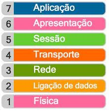
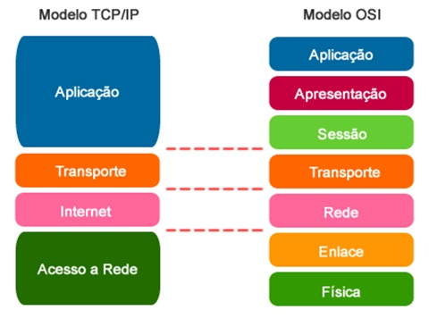
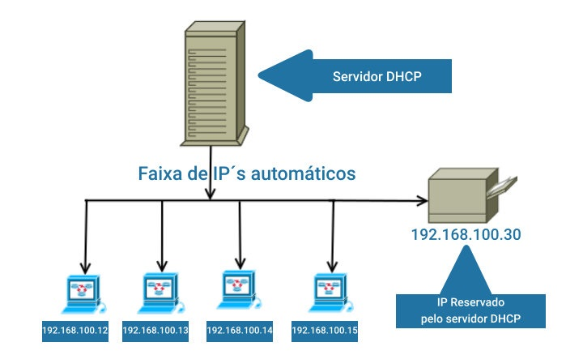

O modelo de interconexão de sistemas abertos (OSI) é um modelo conceitual criado pela Organização Internacional de Normalização que permite que diversos sistemas de comunicação se comuniquem usando protocolos padronizados.Em poucas palavras, o OSI fornece um padrão para que diferentes sistemas de computadores possam se comunicar.
O modelo OSI pode ser considerado a linguagem universal da rede de computadores. Ele se baseia no conceito de dividir um sistema de comunicação em sete camadas abstratas, empilhadas umas sobre as outras.
Para que informações legíveis por humanos sejam transferidas por uma Rede de um dispositivo para outro, os dados devem percorrer as sete camadas do modelo OSI na ordem decrescente no dispositivo que os envia e, em seguida, percorrer as sete camadas na ordem crescente na extremidade que os recebe.
Arquitetura TCP/IP é um conjunto de protocolos de comunicação entre computadores em rede que se caracteriza pela definição de um modelo padrão de camadas para implementação na arquitetura de rede. Com objetivo semelhante ao do modelo OSI no que diz respeito à divisão da arquitetura em camadas, o TCP/IP consiste na junção dos protocolos TCP (Transmission Control Protocol – Protocolo de Controle de Transmissão) e o IP (Internet Protocol – Protocolo de Inter-rede), dois dos mais utilizados.
Conforme já mencionado, o modelo de arquitetura TCP/IP possui suas funções divididas em camada da mesma forma que o OSI. A diferença principal nestas estruturas é o número de camadas encontradas em cada modelo: no OSI encontramos 7 camadas, enquanto no TCP/IP somente 4: Aplicação, Transporte, Rede e Interface de rede.
O Protocolo UDP é um protocolo de comunicação utilizado em toda a internet para transmissões com validade especialmente limitada, tais como reproduções de vídeo ou pesquisas no DNS. Ele acelera as comunicações ao não estabelecer formalmente uma conexão antes que os dados sejam transferidos. Isso permite que os dados sejam transferidos muito rapidamente, mas também pode fazer com que pacotes se percam em trânsito além de criar oportunidades de exploração na forma de ataques DDoS.
O nome DNS significa Domain Name System, ou sistema de nomes de domínios, e contém o registro de todos os domínios da internet. A sua função não é hospedar sites ou aplicações que criamos, mas sim permitir que as requisições cheguem aos locais corretos. Um servidor DNS é feito única e exclusivamente para a tradução de domínios para endereços de IP.
Quando escrevemos uma URL no navegador, como alura.com.br, o nosso computador não sabe como se conectar com o site da Alura, mas ele conhece alguém que sabe: o servidor DNS. Então, ele manda uma requisição pedindo para o DNS responder com o endereço IP do site. Agora, quando essa requisição chegar no servidor DNS, ele tem que agir rápido. Para isso, mantém-se um cache, ou uma cópia da informação, em memória RAM e vão primeiro olhar o cache para ver se tem uma resposta.
o protocolo DHCP, é um protocolo utilizado em redes de computadores que permite às máquinas obterem um endereço IP automaticamente.Digamos que você seja o administrador de uma rede. Se fosse uma rede doméstica com 3 computadores, não seria trabalhoso atribuir um número de IP e todos os parâmetros necessários para cada um deles. Agora, se fossem 100, 200 ou mais, certamente a história seria outra.
O protocolo DHCP faz exatamente isto, por meio dele um servidor é capaz de distribuir automaticamente endereços de IP diferentes a todos os computadores à medida que eles fazem a solicitação de conexão com a rede. Essa distribuição dos IPs é feita em um intervalo pré-definido configurado no servidor. Sempre que uma das máquinas for desconectada o IP ficará livre para o uso em outra.
FTP (File Transfer Protocol) é um protocolo de rede para a transmissão de arquivos entre computadores. Dentro do conjunto TCP/IP (Transmission Control Protocol/Internet Protocol), ele é um protocolo da camada de aplicação para o download e upload de arquivos em conexões do tipo cliente/servidor.
Um servidor FTP é um computador dedicado para transferir arquivos e facilitar o compartilhamento remoto de dados via internet entre um servidor (remetente) e um computador cliente (destinatário) através de uma conexão baseada no protocolo FTP. Existem dois tipos de servidores que utilizam esse protocolo, o público e o privado. Basicamente, o que os diferencia é a necessidade de um login e senha para ter acesso aos arquivos.
HTTP e HTTPS são protocolos de segurança na Internet bastante evidentes quando acessamos sites de banco ou lojas virtuais para realizar transações financeiras. Geralmente, eles aparecem por meio de avisos para verificar o cadeado de segurança ou observar a sigla HTTPS na barra de endereços do navegador.
O protocolo de transferência de hipertexto (HTTP – HyperText Transfer Protocol) é o protocolo padrão para a web. Por meio dele os navegadores requisitam as páginas da web e as recebem. Dessa forma, o HTTP define, entre outras formalidades, como são requisitadas as páginas da web, como são enviados os dados que o usuário insere em formulários e como o servidor envia mensagens de erro para o navegador do usuário.
como o HTTP é um protocolo baseado em texto, os dados do usuário e do servidor podem ser interceptados ou alterados no meio do caminho. Nesse contexto, um usuário na rede pode interceptar os seus dados e lê-los ou, pior, alterar a página que você recebe ou a informação que envia para o servidor.
De fato, problemas mais graves e imediatos podem acontecer com transações financeiras, como é o caso de uma transferência bancária. Se o site do banco fosse com HTTP e um usuário mal-intencionado desejasse alterar uma ordem de transferência para depositar o dinheiro na conta dele, esse usuário poderia fazer tranquilamente, pois não há nenhum mecanismo de segurança no protocolo HTTP.
A maioria das explicações resume o HTTPS como um HTTP com o SSL (Secure Sockets Layer) ou, seu sucessor, o TLS (Transport Layer Security). TLS ou SSL são camadas de segurança que fornecem confidencialidade e integridade. No entanto, a autenticação dos sites da web é feita pelos certificados e pela infraestrutura de chaves públicas da Internet.
Para a construção de um website com HTTPS, o administrador do site precisa criar um par de chaves, uma pública e uma privada. Assim, quando um usuário solicita uma conexão com esse site, o servidor envia a sua chave pública para o usuário.
De posse da chave pública, o usuário pode se comunicar com o servidor, garantindo que todas as mensagens enviadas para o servidor somente serão lidas pelo servidor, pois apenas o servidor possui a chave privada. Basta, para isso, que o navegador do usuário encripte todas as requisições e decripte as respostas recebidas com a chave pública do servidor.
Dessa forma, garante-se a confidencialidade, pois o usuário tem certeza que apenas o servidor vai receber suas mensagens e que foi o servidor quem enviou aquela mensagem.
Um web server é um sistema computacional que hospeda e fornece acesso aos conteúdos e aplicações através da internet. Geralmente contratado como um serviço, esse servidor recebe e processa as solicitações feitas por navegadores através de protocolos de rede como o HTTP ou HTTPS.
Um servidor que presta esse tipo de serviço pode ser um computador físico ou instância de um datacenter, que armazena e disponibiliza o conteúdo para ser acessado por meio da internet. Esse acesso geralmente é feito por computadores e dispositivos móveis através de solicitações feitas por browsers, ou seja, softwares navegadores como o Google Chrome e Microsoft Edge.